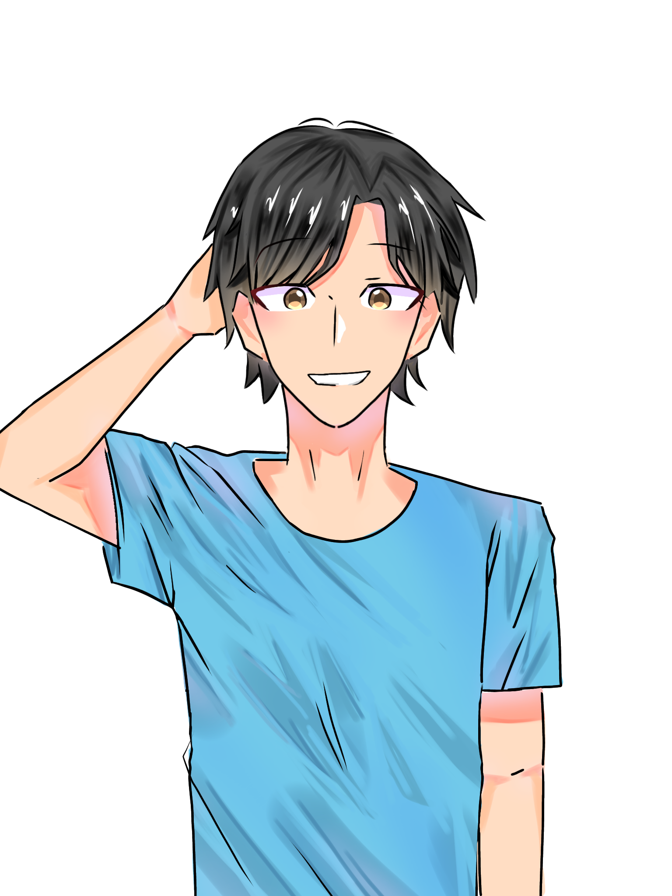
01
Jenaka
Tokoh Utama
Fresh graduate yang memilih membuka warung makan untuk membantu ekonomi keluarga dan mengumpulkan uang untuk kuliah.
SEDANG DALAM PENGEMBANGAN
Sebuah perjalanan penuh cerita, menyusuri kehidupan yang menunggu untuk dikenang.
Coba PrototipeSEBUAH CERITA TENTANG...
Sepiring Nasi Hari Ini mengajak pemain menyusuri kehidupan orang-orang biasa di Indonesia — mereka yang sedang mencari pekerjaan, bertahan di lingkungan kerja yang menekan, menentukan arah hidup setelah lulus sekolah, hingga mengejar pendidikan di tengah keterbatasan ekonomi. Ini adalah cerita tentang perjuangan kecil sehari-hari yang seringkali tak terlihat, namun begitu berarti.
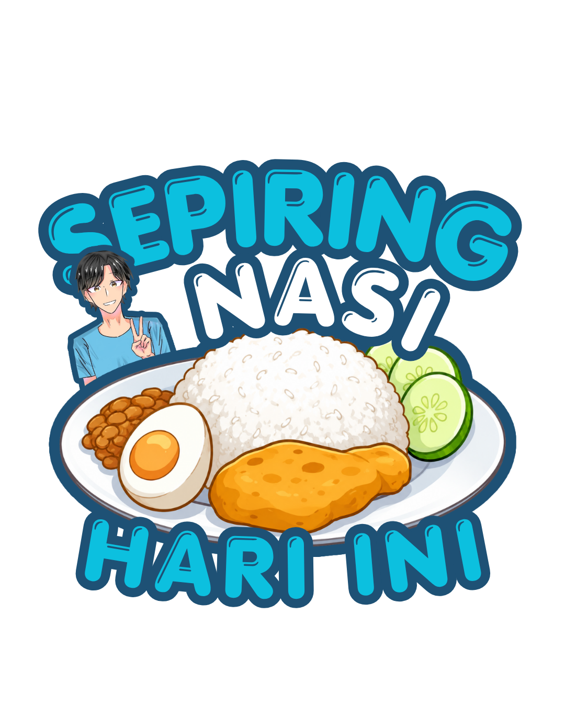
COBA LANGSUNG
Prototipe pengembangan Sepiring Nasi Hari Ini saat ini tersedia untuk dicoba melalui Google Drive. Unduh dan mainkan versi awal dari game ini untuk merasakan langsung gameplay-nya.
Unduh Prototipe (Google Drive)DI BALIK SEBUAH WARUNG
Pemain berperan sebagai Jenaka, seorang fresh graduate yang membuka warung makan untuk membantu ekonomi keluarga sekaligus mengumpulkan biaya kuliah. Di sela kesibukan menjalankan warung, pemain akan bertemu berbagai orang yang membawa cerita dan persoalan hidup mereka masing-masing.
Menata warung dan menyiapkan bahan makanan.
Memasak makanan sesuai pesanan pelanggan.
Melayani pelanggan dan menyelesaikan pesanan.
Berinteraksi dengan pelanggan dan mengikuti cerita mereka.
Membeli bahan, refill stok, dan mengelola kebutuhan warung.
Mengembangkan warung dan mengejar impian Jenaka.
Satu siklus, diulang setiap hari — namun setiap hari membawa cerita yang berbeda.
GAME FEATURES
Masak berbagai menu, siapkan pesanan makan di tempat maupun take-away, lalu layani pelanggan.
Beli bahan makanan, pantau persediaan, refill bahan yang habis, dan catat pembukuan warung.
Gunakan hasil usaha untuk menambah meja, kursi, dekorasi, dan berbagai peningkatan lainnya.
Berinteraksi dengan pelanggan dan mengikuti cerita personal mereka yang berkembang hari demi hari.
Jelajahi lingkungan sekitar warung dan temukan percakapan serta kejadian di luar aktivitas warung.
Berpindah antara sudut pandang Third-Person dan First-Person untuk melihat dunia dari sisi berbeda.
🎯 Character Progression — Bantu Jenaka mencapai berbagai impiannya, mulai dari mengumpulkan biaya kuliah hingga membantu keluarganya dan mengembangkan warung.
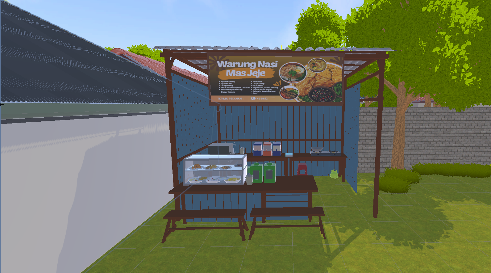
DUNIA GAME
Sepiring Nasi Hari Ini berlatar di keseharian kota-kota di Indonesia — warung makan sederhana, ruang kerja yang penuh tekanan, kamar kos kecil, hingga panti asuhan yang menyimpan banyak cerita. Tidak ada dunia fantasi di sini; yang ada hanyalah potret kehidupan nyata yang dekat dengan siapa saja.
Suasana yang dibangun bersifat hangat namun jujur, menampilkan perjuangan sehari-hari tanpa berlebihan, agar pemain benar-benar merasa terhubung dengan setiap tokohnya.
CERITA
Setiap tokoh dalam Sepiring Nasi Hari Ini punya satu pertanyaan yang menuntun perjalanan hidupnya, apa yang harus dikorbankan demi bertahan, dan apa yang masih layak diperjuangkan?
Tanpa membocorkan terlalu banyak, cerita ini mengangkat tema tentang kerja keras, harapan, dan arti dari sepiring nasi sebagai simbol perjuangan hidup sehari-hari.
KARAKTER

Tokoh Utama
Fresh graduate yang memilih membuka warung makan untuk membantu ekonomi keluarga dan mengumpulkan uang untuk kuliah.
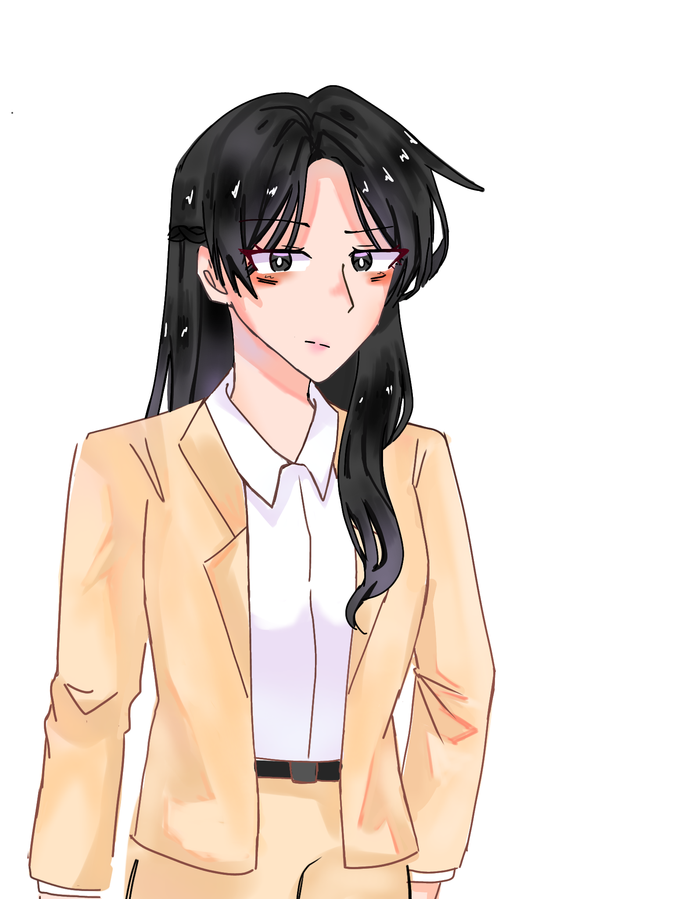
Tokoh Pendukung
"Ketika pekerjaan yang diperjuangkan justru perlahan menghabiskan dirinya." Pekerja kantoran yang terjebak dalam tuntutan dan tekanan dunia kerja.
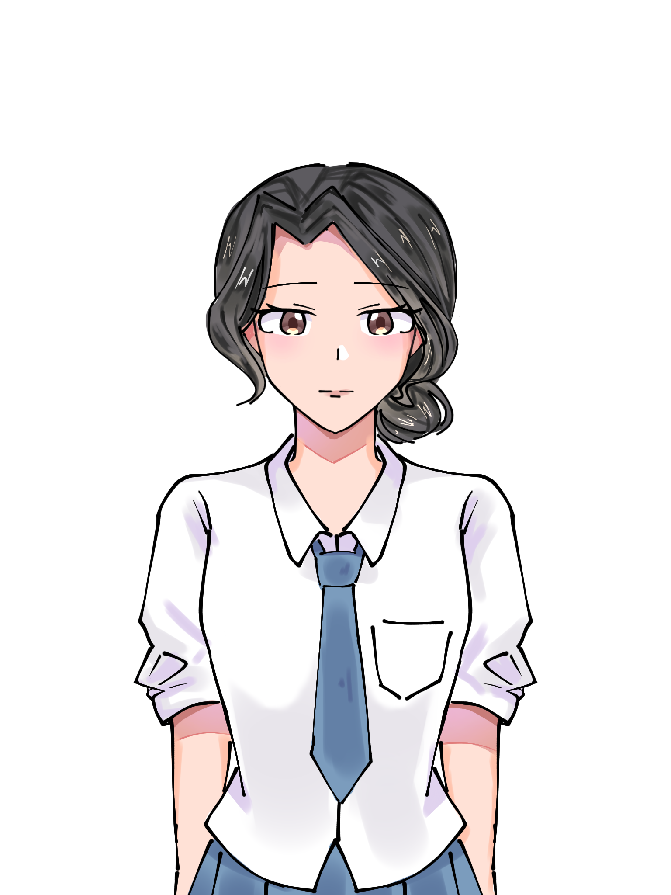
Tokoh Pendukung
"Tumbuh dari sebuah janji yang tak pernah ditepati." Anak panti yang ditinggalkan ibunya dan masih mencari jawaban tentang keluarganya.
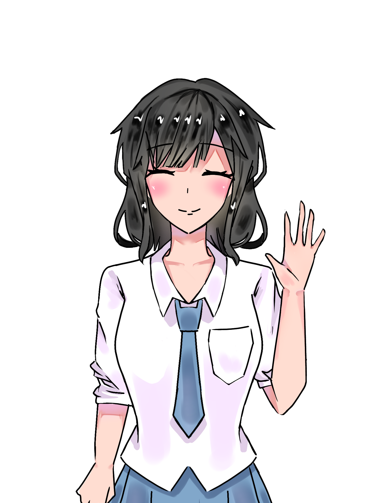
Tokoh Pendukung
"Lulus sekolah, lalu harus ke mana?" Menghadapi ketidakpastian masa depan setelah kelulusan.
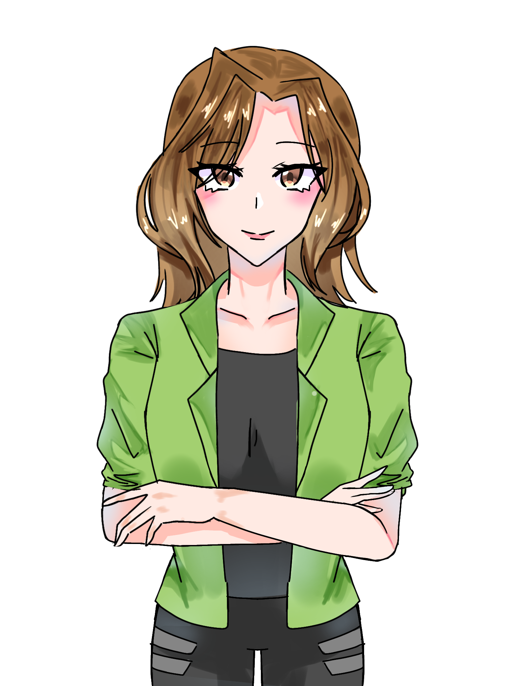
Tokoh Pendukung
"Mimpi besar dimulai dari peran kecil." Pendatang baru di dunia entertainment yang berjuang mendapatkan kesempatan.
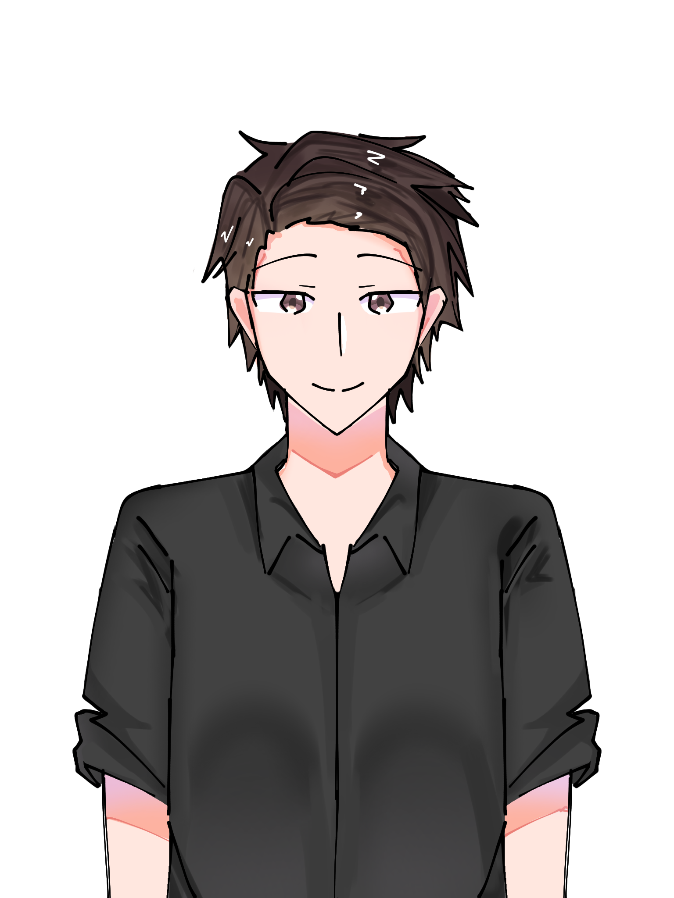
Tokoh Pendukung
"Tidak semua cinta datang tanpa perbedaan." Menghadapi dilema cinta dan perbedaan keyakinan.
Tokoh Pendukung
"Ingin mandiri, tetapi pekerjaan tak kunjung datang." Pemuda yang berjuang untuk mendapatkan kesempatan bekerja.
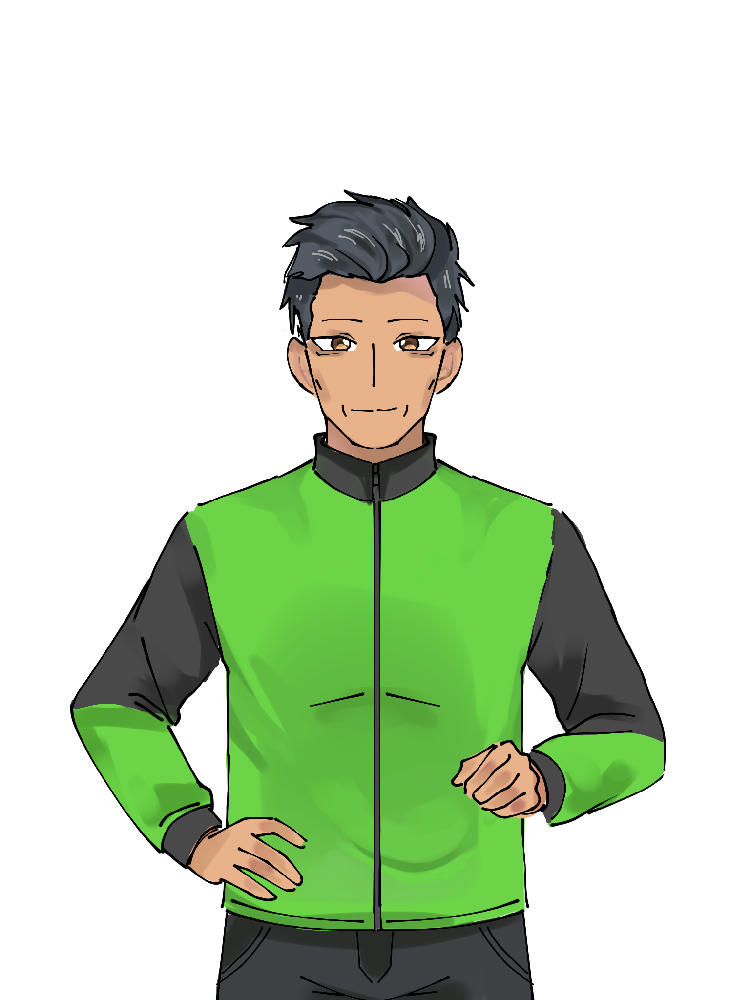
Tokoh Pendukung
"Lelah boleh, berhenti tidak." Seorang ayah dan pengemudi ojol yang bekerja keras demi keluarganya.
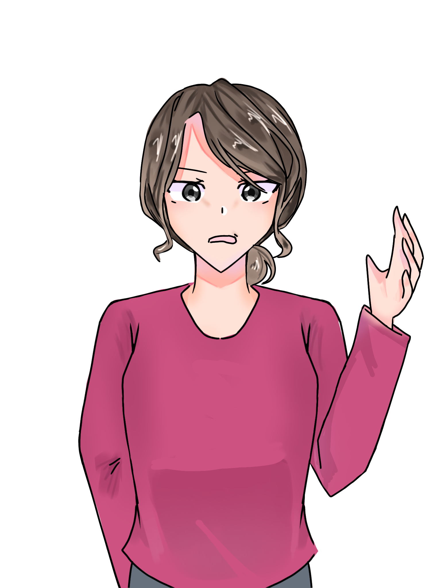
Tokoh Pendukung
"Di balik rumah yang terurus, ada ibu yang juga ingin dimengerti." Seorang ibu rumah tangga yang menghadapi persoalan keluarga dan perjuangan yang sering tak terlihat.
KARAKTER 3D
Putar dan jelajahi model karakter langsung di website ini.
UNIQUE SELLING POINT
Warung menjadi tempat bertemunya berbagai kehidupan. Setiap pelanggan membawa masalah, harapan, dan cerita mereka sendiri. Di tengah kesibukan memasak dan melayani pesanan, pemain perlahan mengenal kehidupan orang-orang di balik setiap meja.
Mengelola warung, memasak, melayani pelanggan, dan mengatur keuangan.
Mengikuti kehidupan berbagai karakter dan melihat bagaimana cerita mereka berkembang dari hari ke hari.
Mengangkat kehidupan, permasalahan, lingkungan, dan karakter yang dekat dengan keseharian masyarakat Indonesia.
"Setiap pelanggan punya cerita.
Setiap cerita dimulai dari sebuah hidangan."
TARGET AUDIENCE
"Sebuah dunia yang terasa familiar, tempat pemain dapat menemukan sedikit bagian dari dirinya sendiri maupun orang-orang di sekitarnya."
AVAILABLE ON
Platform utama untuk pemain PC yang mencari pengalaman simulation dan story-driven game.
Membawa pengalaman Sepiring Nasi Hari Ini kepada pemain mobile dengan gameplay yang lebih fleksibel.
Strategi PC + Mobile — game dikembangkan untuk menjangkau dua kelompok pemain sekaligus, dengan penyesuaian kontrol dan pengalaman pengguna sesuai karakteristik masing-masing platform.
Premium Game Sales
Untuk saat ini, fokus utama adalah menghasilkan game utama yang lengkap dan berkualitas, kemudian membuka peluang pengembangan konten tambahan setelah game memiliki basis pemain.
Potential Future Content
PENGEMBANGAN
Selesai
Selesai
Sedang Berjalan
Akan Datang
Akan Datang
Konsep dan pra-produksi — identitas game, perencanaan gameplay, karakter, cerita, dan dunia — telah rampung sepenuhnya. Saat ini tim sedang membangun sistem warung, karakter, environment, dialog, dan story. Tahap berikutnya adalah polishing (optimization, balancing, audio, bug fixing, user testing) sebelum menuju demo/full release untuk PC dan mobile.
GALERI PENGEMBANGAN
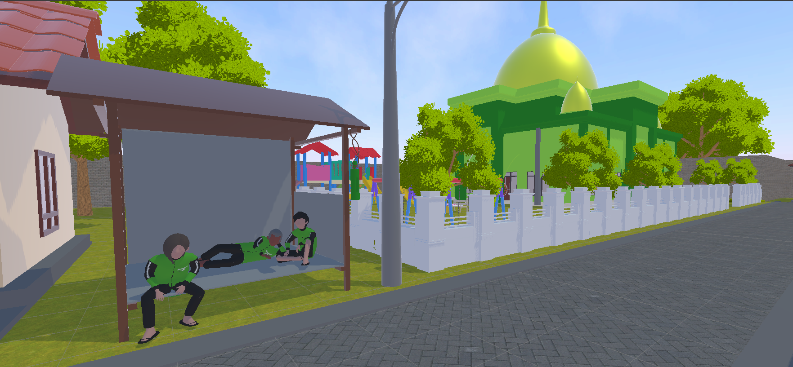
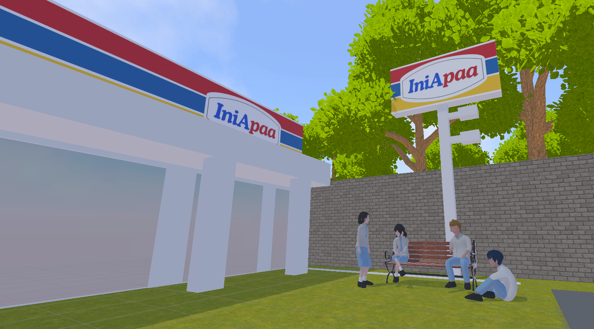
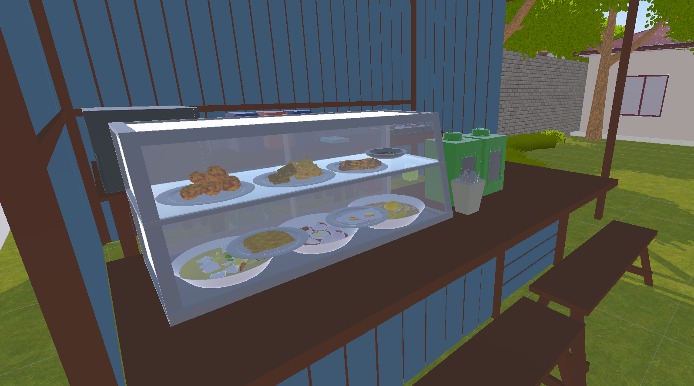
HELP US BRING THIS STORY TO LIFE
Kami mencari mitra pendanaan untuk membantu mengubah development build yang ada saat ini menjadi game yang lengkap dan matang, siap dirilis untuk PC dan mobile.
30% — Rp 3.000.000
Pendaftaran akun pengembang resmi dan lisensi penerbitan game di platform global (Steam Direct Fee & Google Play Console Account), serta biaya administrasi terkait legalitas rilis.
25% — Rp 2.500.000
Pembuatan cuplikan launch trailer, materi promosi visual (poster/banner), iklan digital di media sosial (TikTok & Instagram Ads), dan pendaftaran ke acara showcase game indie.
25% — Rp 2.500.000
Pembelian lisensi komersial untuk efek suara (sound effects), musik latar (soundtrack/BGM) khusus suasana cozy, serta aset visual tambahan untuk mendukung kualitas game.
20% — Rp 2.000.000
Biaya uji coba performa (playtesting) lintas perangkat PC dan HP Android, lisensi tools/software pendukung pengembangan, serta dana cadangan operasional peluncuran.
EVERY PLATE HAS A STORY
Setiap hari, orang-orang datang ke warung dengan tujuan yang berbeda.
Ada yang sedang mencari pekerjaan.
Ada yang mengejar pendidikan.
Ada yang mempertahankan keluarga.
Ada yang mengejar mimpi.
Ada yang hanya berusaha melewati hari.
Dan di tengah semuanya,
ada sepiring nasi.
Different lives. Different struggles. One reason to keep going.
TETAP BERSAMA KAMI
Ikuti proyek ini dan jadilah bagian saat dunia ini membuka pintunya.
Ikuti Perkembangannya